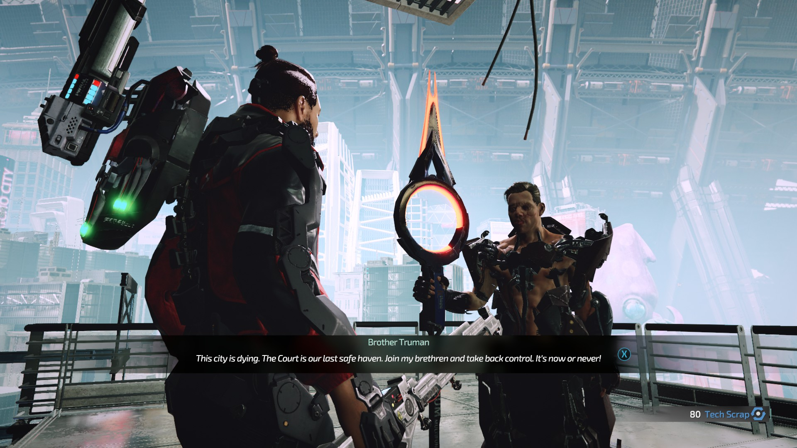
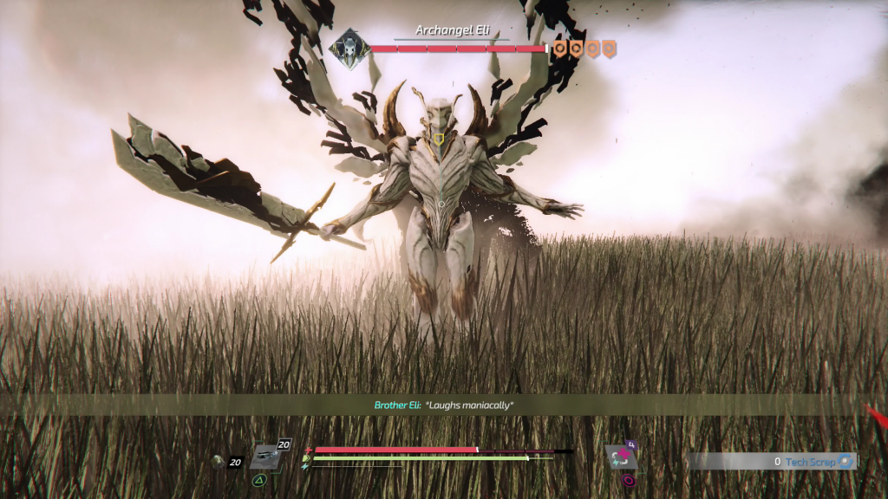

After completing 40+ hours in Surge 2 I can say positively that this is a good game.
I play games on my PS4 pro , and for some reason none of my friends were much interested in the Surge 1 or now in the Surge 2. Time and again I had encouraged them to try it out,but the comparison , "Dark Soulish" makes them hesitant I think.
Now that Surge 1 was free on PSN last month and Surge 2 is out, this is a good time to dive into it these amazing games.
As I have said earlier, Surge series is influenced by few aspects of dark souls, but it is not as difficult/challenging as the dark Souls games. There are several methods at your disposal to even the playing field and grinding the same area multiple times to level up is always a good idea.
Coming back to the topic at hand, Surge 2. Building upon the already robust mechanics of Surge 1, Surge 2 introduces several small but significant changes that makes the gameplay much more fun.
The blocking mechanism has been revamped. Now we have directional blocking. Just blocking an attack will not do anymore, it will just soften the damage a bit. Now we have to press the correct directional prompt to block the attack. If you time this perfectly, you will have the sweet success of staggering your enemy. Although this might seem a bit complicated, it can be easily be gotten used in the first few hours of the game.
The game also introduces jumping, which was something sorely missed in Surge 1. This along with few changes to the traversal system, makes moving around much more fun.
Surge 1, had introduced us with the sweet mechanics of cutting limbs of enemies to collect loot. Surge 2, returns with the same mechanics. Trust me, chopping a bad guys head off never gets old. We like these games because of the difficult boss battles and the sense of reward and accomplishment we get on whooping its ass/or narrowly escaping death. As such Surge 2, has a wide variety of baddies. There are over 20 different enemy types with their associated weapons and armor. Few of the favorite weapons and armor from Surge 1 makes a reappearance as well.
This is not to say that there are issues with this game. For a game that focuses on blocking/parring enemy attacks while locked on, there has been instances of getting automatically de-locking. This is especially frustrating when in a boss fight. However this does not happen too many times, and usually happen when the enemy leaps out of sight/ behind you.
Coming to the nitty gritty.
STORY


Story: Surge 2 has a predictable story. By midgame to early late game it would be clear to you what will happen in the story next. This along with the lack of any shocking or major interesting events makes the journey to the end a little bland. Don’t get me wrong, the story is not bad, but it is not worth investing 40 hours for. 2/5
Gameplay
Gameplay: What the Surge 2, lacks in story makes up for in a fun and interesting gameplay. Ripping limbs of enemies never gets old. The world is lettered with loot to find. If you go off the beaten path more often than none you would find interesting loot lying around. This added with the fact that players can now apply icons on the world to give directions or warnings to others makes loot finding a lot easier.
There are a lot of small changes in gameplay in Surge 2, but still everything seems a bit familiar.
The de-locking while fighting bosses who jump around quickly needs to be addressed asap. 4/5
Characters/Enemies
Characters/Enemies: Surge2 has more in number and in variety the enemies you encounter. Although the voice acting has been done pretty good, one does not feel attached to any of the major characters in the game. Even the protagonist, does not inspire a sense of caring. 3/5
World/Graphics/ Sound/Music
World/Graphics/ Sound/Music: As was in Surge1, the world of Surge 2 is also designed to look very pretty. The game as a certain sense of verticality to it which goes well with the new traversing system. It is safe to say that the word design and graphics have improved. Open places, with vegetation looks absolutely stunning. Explosions and other effects seem to be very polished as well. Character animation has been done very well. Some of the bosses do look terrifying as they should. Their movement, attack and other animations are also done superbly.
The voice acting as I mentioned above is done very well. Every weapon and combat drone modules have distinct sound to them which makes them feel more different. Explosions, attacks sound good which cause the impact of hitting or being hit believable.
The background music/menu music is simple, does not warrant a like or dislike. 4/5
Rewards/Loot
Rewards/Loot : These types of games are known for its boss battles and the sweet loot it drops along with the sense of pride and achievement. Surge2 achieves this nicely. Few of the boss battles are hard. It would take a few tries to get used to their specific attack movements, but once it is done, the joy of doing a perfect parry and making a big monster boss fall on its ass is too much fun. Even though the story might seem a little lack luster, the boss/mini boss battles prevents one from feeling monotonous.
There is plenty of loot spread across the world of Surge2. Explore the world diligently or follow the directions left by other players to find them. 2.0 weapons have made a comeback. If you don’t know this already, there is a specific way you can kill/damage bosses to get a better version of the normal weapon that you are supposed to get. This again makes killing a boss in a specific way more rewarding and fun.
Although Surge2 has a huge number of weapons, you will soon come to like a particular type of weapon. My favorite is a staff or a spear. Although I kept getting more weapons, after mid game I kind of stuck to the spear I had got earlier. I keep upgrading it. It is very easy to compare weapon stats, you can even compare the stats of future upgrades to it.
Remember to collect all mods that you can possibly find. Few enemies drop mods as well. Core power management and mods are absolutely necessary to survive the world of Surge2. 4/5